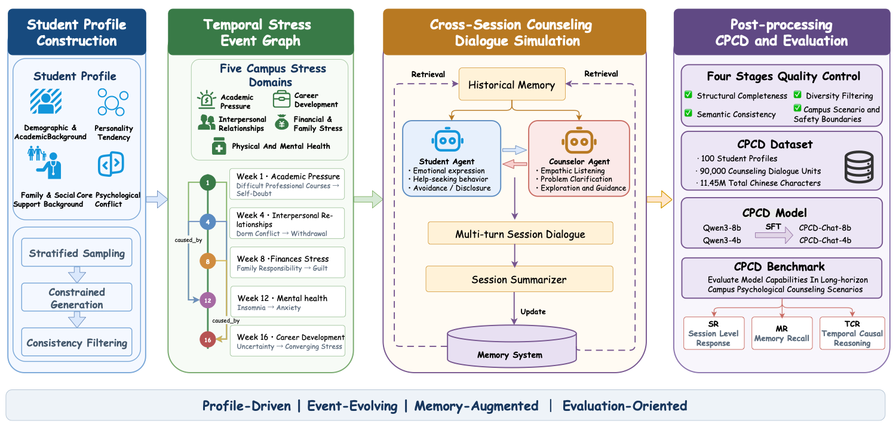

这是论文《Psy-Chronicle: A Structured Pipeline for Synthesizing Long-Horizon Campus Psychological Counseling Dialogues》的阅读笔记。文章关注一个很实际的问题：现有心理支持数据大多是单轮问答或短对话，但真实的心理困扰往往不是由孤立事件瞬间产生的。它可能从一次考试失利开始，逐渐影响睡眠、人际关系和自我评价，并在之后的多次咨询中反复出现。
论文的核心贡献可以概括为三点：
- Psy-Chronicle：一套用于合成长时间跨度校园心理咨询对话的结构化数据生成框架；
- CPCD（Chinese Psychological Counseling Dialogue Dataset）：一个面向大学心理咨询场景的中文长程对话数据集；
- CPCD-Bench：从会话级响应、长程记忆召回和时间—因果推理三个维度评估模型。
Psy-Chronicle Method

1. 学生画像。对于每个合成学生 i，框架首先构造一个四维学生画像：
其中，Bi、Ti、Si 和 Ci 分别表示人口统计与学业背景、人格倾向、家庭与社会支持背景，以及核心心理冲突。
2. 时间压力事件图。在学生画像的基础上，框架生成一张跨越整个学期的时间压力事件图：
Vi 是压力事件节点序列，Ei 表示事件之间的时间与发展依赖。每个节点包含事件内容、发生时间、压力强度和事件后的主要心理状态。系统以周为粒度，在 16 周内生成 10 至 15 个事件，覆盖学业压力、人际关系、职业发展、家庭与经济压力、身心健康五类校园场景；节点间的 caused_by 关系则把这些压力源组织成一条时间连贯、可以逐步演化的轨迹。
举个例子：某位学生在第 1 周因为专业课难度过高而开始自我怀疑，记为事件 E1；第 4 周又与室友发生冲突，逐渐回避社交，记为 E2；到了第 12 周，持续的学业压力和社交退缩共同引发失眠与焦虑，记为 E3。在事件图中，E2 可以记录 caused_by: [E1]，E3 则记录 caused_by: [E1, E2]。这样，后续咨询看到的就不只是“学生最近失眠”，而是失眠如何从早期的学业受挫和人际退缩逐步发展而来。
3. 跨会话咨询模拟。Psy-Chronicle 随后沿事件图模拟多次咨询。在第 t 次会话中，对话由学生画像、当前压力事件和此前累积的历史记忆共同决定：
这里的 Φ(·) 表示学生智能体与咨询师智能体之间的交互模拟。
4. 结构化记忆更新。每次会话结束后，系统用会话级摘要函数 Ψ(·) 压缩本次对话，并更新历史记忆：
摘要记录当前压力事件、主要情绪、核心冲突、咨询重点和仍未解决的问题，再作为后续会话的上下文。它让系统不必在每一次生成时重新读取全部原始对话，同时帮助维持跨会话连续性并减少事实漂移。
因此，整个 Psy-Chronicle 可以写成下面这条闭环生成路径：
经过这套设计，每次咨询都被显式连接到学生的稳定画像、当前校园压力事件和累积咨询历史。最终数据还会经过结构完整性、语义一致性、多样性、校园场景适切性和安全边界检查。
Benchmark
CPCD-Bench 不仅检查模型能否生成一轮看起来合理的咨询回复，还进一步检查模型能否利用跨会话历史、跟踪学生困扰的长期变化，并理解压力事件之间的时间关系和演化关系。它使用 20 条未参与训练的完整学生轨迹，构造了三类互补任务。
| 任务 | 输入 | 输出 | 评测重点 | 样本数 |
|---|---|---|---|---|
| SR | 学生画像、当前咨询上下文、历史记忆 | 下一轮咨询师回复 | 回复质量、历史利用和上下文连贯性 | 99 |
| MR | 学生画像、完整咨询历史 | 事实问题的答案 | 长程信息检索、事实准确性和幻觉控制 | 40 |
| TCR | 学生画像、完整咨询历史 | 事件发展轨迹与因果解释 | 时间排序、事件链组织和因果推理 | 20 |
论文采用 LLM-as-a-Judge 对开放式输出进行评分，GPT-5.2 作为自动评分模型。被比较的基线包括通用模型、心理咨询领域模型，以及和 CPCD-Chat 使用相同基础架构的 Qwen3 模型。
| 类别 | 模型 | SR | MR | TCR |
|---|---|---|---|---|
| 通用模型 | GPT-5.4 | 4.778 | 4.513 | 4.525 |
| Gemini-3-flash-preview | 4.455 | 4.445 | 4.445 | |
| Gemini-2.5-flash | 3.967 | 4.296 | 4.211 | |
| DeepSeek V3.2 | 4.397 | 4.318 | 4.488 | |
| MiniMax M2.7 | 4.173 | 4.102 | 4.212 | |
| GLM-5.1 | 4.198 | 4.202 | 4.311 | |
| Kimi-k2.5 | 4.212 | 4.103 | 4.228 | |
| Qwen3-Max | 4.231 | 4.205 | 4.238 | |
| Qwen3-8B | 3.625 | 3.722 | 3.623 | |
| 领域模型 | CBT-LLM（Baichuan-7B） | 3.714 | 3.811 | 3.733 |
| Camel（LLaMA-8B） | 3.778 | 3.814 | 3.712 | |
| PsyLLM（Qwen3-8B） | 3.825 | 3.922 | 3.823 | |
| 本文模型 | CPCD-Chat-4B | 3.776 | 3.756 | 3.641 |
| CPCD-Chat-8B | 3.884 | 3.947 | 3.824 |
三类任务如何评分
SR · 会话级响应
SR 在给定学生画像、当前咨询上下文和历史记忆时，评估模型生成下一轮咨询师回复的能力。
- 共情能力：能否准确理解并回应学生的情绪及其深层含义；
- 连贯性：能否与学生画像、历史轨迹、当前表达和咨询阶段保持一致；
- 专业性：是否保持专业边界、稳定表达和风险意识。
高分回复需要体现深入共情、紧密结合上下文并保持专业边界；表面安慰、忽略历史、上下文冲突、过度说教或潜在有害的表达都会被扣分。
MR · 记忆召回
MR 评估模型从长程咨询历史中找回事实信息的能力，评分维度包括准确性、完整性、时间一致性和无幻觉性。
- 准确性：能否正确回忆事件、人物、状态或数值；
- 完整性：是否覆盖问题要求的关键内容；
- 时间一致性：是否正确处理事件顺序；
- 无幻觉性：是否避免编造历史中不存在的信息。
TCR · 时间—因果推理
TCR 评估模型组织和解释学生心理困扰长期发展过程的能力，评分维度包括时间准确性、因果连贯性、完整性和无幻觉性。
- 时间准确性：能否按正确顺序组织关键事件；
- 因果连贯性：能否解释事件间的影响，并区分触发因素、放大因素和维持因素；
- 完整性：是否覆盖关键事件与重要心理机制；
- 无幻觉性：是否避免引入不存在的事件、诊断、人物行为或夸大结论。
高分回答需要同时构建清晰的事件时间线和合理的因果链。只罗列零散事件，或者用编造的信息补齐推理链，都不算真正理解了长期变化。
咨询对话与记忆是怎样生成的
咨询师智能体接收学生的基本信息、历史记忆、当前对话历史和咨询阶段。为了保留咨询场景中的信息不对称，咨询师不会直接看到完整内部画像或预设的核心冲突，而要通过对话逐步理解学生。核心提示词还规定：每轮最多问一个问题，优先使用苏格拉底式引导，回复保持简短口语化，并严格遵守当前咨询阶段。
查看咨询师智能体的核心 Prompt
Role: Counselor Agent
You are conducting the {session_id}-th counseling session
with student {student_name}.
Counseling Context:
- Basic information: {basic_info}
- Historical memory: {memory_summary}
- Dialogue history: {dialogue_history}
Current counseling phase:
{current_phase}
Phase instruction:
{phase_instruction}
Dialogue principles:
1. Ask at most one question in each response.
2. Use Socratic guidance rather than directly telling the student what to think,
except in crisis-intervention situations.
3. Keep the response concise, natural, and conversational.
4. Strictly follow the current phase; do not rush into later-stage advice.
Please reply as the counselor. Output only spoken content.关系建立与探索
以简短回应、最低限度鼓励和开放式问题为主，只倾听并澄清问题，不急于分析或建议。
深入探索
回应学生表达出的情绪，追问具体情境并澄清模糊信息，必要时连接此前的咨询记忆。
CBT 导向干预
依次进行确认与共情、识别关键想法或信念、开放式反思、策略探索，以及面向未来的鼓励。
每次会话至少 20 轮、最多 30 轮。达到最低轮数后，如果咨询师生成“下周见”或“今天先到这里”一类结束语，会话即可结束。随后，记忆模块把本次对话压缩成结构化记录：
查看结构化记忆的输出格式
{
"session_id": "{session_id}",
"week": "{week}",
"emotional_state": "学生当前的主要情绪状态",
"key_topics": "本次咨询讨论的关键主题",
"counselor_intervention": "咨询师采用的主要干预方式",
"student_progress": "学生的进展或阻抗",
"summary_text": "供后续会话使用的 200 字以内摘要"
}如何使用 CPCD 数据集
CPCD 已发布在 Hugging Face 和 ModelScope，也可以从作者的 GitHub 仓库查看原始会话。数据按学生轨迹组织：conversation/{session_num}/consultation_events_{case_id}.json 保存第 1 至第 10 次咨询中的原始对话；同一个 case_id 对应同一名合成学生。
- 按轨迹划分数据。训练集与验证集应按照学生 case_id 划分，而不是随机拆散对话轮次，否则同一学生的画像和历史可能同时进入训练与评测，造成信息泄漏。
- 构造监督微调样本。论文的输入由学生画像、当前咨询上下文、历史记忆摘要和必要的事件背景组成，输出是目标咨询师回复。可以把每一轮咨询师发言转换为一条 instruction/input/output 样本。
- 保留中间结构。如果研究目标涉及长期记忆或事件演化，不应只提取对话文本；学生画像、事件节点、会话编号与记忆摘要正是 CPCD 区别于普通咨询语料的部分。
如何用 CPCD-Bench 给系统评分
Benchmark 提供题目和历史记录 → 被测系统生成回答 → Judge 根据评分标准检查回答 → 汇总所有题目的得分。
- 评测题目：来自 CPCD-Bench，包含学生画像、咨询历史、当前问题等输入；
- 被测系统（target model）：你想评价的模型，例如自己微调的 Qwen、一个 RAG 系统或在线 API；
- 参考答案：作者为每道题准备的标准回答或关键信息，用于帮助判断回答是否准确；
- 评分模型（judge model）：读取题目、被测系统回答、参考答案和 rubric，再给出分数及理由。论文使用的是 GPT-5.2。
第一步：选择要测的能力
- SRG：输入学生画像、历史记忆和当前对话，让系统生成咨询师的下一轮回复；
- MR：根据完整咨询历史回答事实问题，检查系统能否记住跨会话信息；
- TCR：还原事件演变过程并解释因果关系，检查系统的时序与因果推理能力。
第二步：决定使用在线模式还是离线模式
在线模式适合能够通过 OpenAI-compatible API 调用的模型。脚本会依次读取题目，调用被测模型生成回答，再调用 Judge 评分，整个过程一次完成。
离线模式适合本地部署或自己微调的模型。你先在本地让模型回答所有题目，将结果保存成 CSV；之后评分脚本只读取现成答案，不需要访问你的模型。CSV 至少需要下面两列：
| task_id | model_response |
|---|---|
| SRG_001 | 听起来这次考试失利让你开始怀疑自己的能力…… |
| SRG_002 | 你提到最近的失眠在宿舍冲突之后变得更明显…… |
第三步：让本地模型生成这份 CSV
以 SRG（下一轮咨询回复生成）为例，生成过程是：
读取一条任务 JSON → 将画像、历史对话和学生当前发言拼成提示词 → 调用本地模型 → 把回答连同原来的 task_id 写入 CSV。
如果使用 Hugging Face Transformers 加载本地模型，这个生成脚本在逻辑上主要完成下面六件事：
- 加载模型。脚本先从本地模型目录读取 tokenizer 和模型权重，将模型放到可用的 GPU 上，并切换到推理模式。
- 读取题目。脚本遍历
eval_task_info/srg中的任务 JSON。每条任务都有唯一的task_id，以及一个input_to_model对象。后者保存了本题允许提供给模型的上下文。 - 整理提示词。对于每道 SRG 题，脚本从
input_to_model中取出学生画像、此前咨询历史、本次事件、本轮已有对话和学生当前发言，并按照固定顺序拼接起来。最后要求模型只生成“咨询师接下来的一次回复”。 - 调用本地模型。整理后的提示词会套用该模型自己的聊天模板，再被转换成 token 送入模型。为了保证不同系统之间的比较尽量稳定，可以使用固定的生成参数，例如限制最大回复长度，并关闭随机采样。
- 提取回答。模型输出往往同时包含输入提示词和新生成内容。脚本只截取新生成的部分，去除特殊符号和首尾空白，把它作为这一题的
model_response。 - 逐条写入 CSV。每完成一道题，脚本就把原始
task_id、模型回答和运行状态写入一行。逐条保存的好处是，即使长时间推理中途停止，前面已经完成的答案仍然保留。
第四步：运行在线评测
以 SRG 为例，下面的命令会同时完成“生成回答”和“评分”：
python eval_task_info/srg/srg_eval_online.py \
--tasks "./eval_task_info/srg" \
--rubric "./eval_task_info/srg/rubric.md" \
--target-model "model/identifier" \
--judge-model "openai/gpt-5.2" \
--output "./outputs/srg_online_eval.jsonl" \
--csv-output "./outputs/srg_online_eval.csv" \
--resume各参数的含义是：
--tasks：评测题目所在目录；--rubric：Judge 使用的评分标准；--target-model：被测模型的 API 标识；--judge-model：负责评分的模型；--output：保存逐题回答、得分和评分理由的 JSONL；--csv-output：保存便于统计和查看的表格结果；--resume：中断后从已有结果继续，避免重复调用已经完成的题目。
第五步：给本地生成的回答评分
如果已经得到模型回答，例如保存在 results/srg_my_model.csv，则使用离线脚本：
python eval_task_info/srg/srg_eval_local.py \
--input-csv "./results/srg_my_model.csv" \
--tasks "./eval_task_info/srg" \
--rubric "./eval_task_info/srg/rubric.md" \
--judge-model "openai/gpt-5.2" \
--output "./outputs/srg_local_eval.jsonl" \
--csv-output "./outputs/srg_local_eval.csv" \
--resume脚本会找到回答文件，然后让 Judge 逐条评分。
第六步：理解单条回答是怎样得分的
以一条 SRG 回答为例，Judge 会分别给共情、连贯性和专业性打 1–5 分。假设一条回答得到：
- 共情能力：4 分；
- 连贯性：3 分；
- 专业性：5 分。
那么这条回答的得分就是 (4 + 3 + 5) ÷ 3 = 4.0。MR 和 TCR 各有四个评分维度，也使用相同方式计算单条回答的平均分。
第七步：从单条得分得到系统最终成绩
完成全部题目后，再对同一任务下的所有样本取平均。例如 SR 一共有 99 道题：
系统 SR 得分 = 99 道 SR 题目的单题得分总和 ÷ 99
MR 的 40 道题和 TCR 的 20 道题也分别计算平均值。最终结果会写成 SR = 4.02，MR = 3.71，TCR = 3.28。
论文信息：Chaogui Gou, Psy-Chronicle: A Structured Pipeline for Synthesizing Long-Horizon Campus Psychological Counseling Dialogues, arXiv:2605.22140, 2026。论文页面 ↗ · 代码与数据 ↗ · Hugging Face 合集 ↗